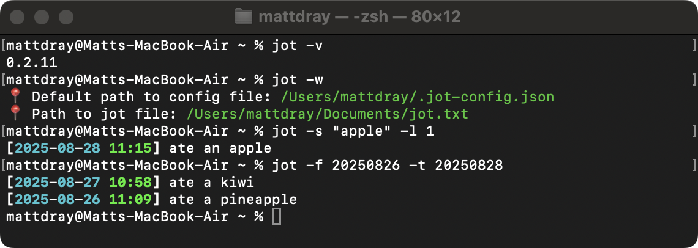

[project]
name = "2025-12-28-jot-fib"
version = "0.1.0"
requires-python = ">=3.12"
dependencies = []
tl;dr
jot now has --where, --version, --from and --to options.
Whoops
Me, lying, the last time I posted about jot:
It’s basically feature-complete from my perspective.
Reminder: jot is my simple little Python CLI for recording timestamped notes to a text file.
In fact, now you can:
- combine options
- search between specific dates
- quickly get tool meta-information
And?
Options --search and --list (-s and -l) can now be used in combination.
This was achieved by adding an argument to the search_jottings() function that takes the value given by --list.
So, assuming this little jot file:
jot.txt
[2025-08-28 11:15] ate an apple
[2025-08-27 10:58] ate a kiwi
[2025-08-26 11:09] ate a pineapple
[2025-08-25 10:40] ate an apple and a pearA casual --search will return anything matching your search term.
jot -s "apple"[2025-08-28 11:15] ate an apple
[2025-08-26 11:09] ate a pineapple
[2025-08-25 10:40] ate an apple and a pearBut that could overwhelm the console if you have a lot of jottings.
So now you can add the --list flag to limit to the most recent n jottings that match the search term.
jot -s "apple" -l 1[2025-08-28 11:15] ate an appleWhere? What?
I added helpers --where and --version (-w and -v) as quality-of-life improvements.
--where is useful if you forget the file paths handled by jot, which are:
- the config file, which contains a key-value path to the jot file
- the jot file, which is where the text of the jottings is saved
jot -w📍 Default path to config file: /Users/mattdray/.jot-config.json
📍 Path to jot file: /Users/mattdray/Documents/jot.txtThe tool has gone through a bunch of changes, so you can check what version you’re running with --version.
jot -v0.2.11The version number is also provided now when you run jot --help (-h) to print the help documentation.
Assuming you’re using uv, run uv tool upgrade jot to get the latest version.
When?
I mentioned using a regular expression to filter for jottings between dates. That’s awful1.
Helpfully, Olivier Iffrig-Petit contributed a couple of new options to handle this.
--from and --to (-f and -t) take values in the form YYYYMMDD to filter from (inclusive) and to (exclusive) given dates. They can be used alone or together, along with --search and --list.
So, to return jottings from 26 August 2025 up to (but not including) 28 August 2025:
jot -f 20250826 -t 20250828[2025-08-27 10:58] ate a kiwi
[2025-08-26 11:09] ate a pineappleIsolating time periods like this has helped me find information to write weeknotes and complete my timesheets.
Many thanks Olivier.
Sure?
Along with these features, I’ve added basic tests for the Python functions using pytest. A couple of things that were new to me were:
- the
@pytest.mark.parametrize()decorator, which helps set up inputs that can be iterated over in a test - that
capsyscaptures system outputs, as the name implies, which you can compare to expected values
And naturally my patience was tested trying to get the pytest GitHub Action to run correctly.
Next?
Next thing might be to prepare jot for PyPi. There’s probably two breaking changes to be made before then:
- Save the config file somewhere more suitable than the user’s home directory.
- Rename the package because there’s already a macOS tool named ‘jot’, lol2.
So, perhaps, finally, maybe, for now:
It’s basically feature-complete from my perspective.